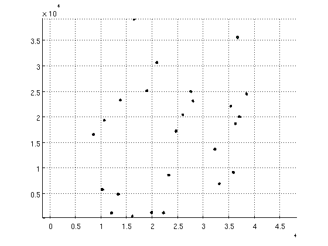
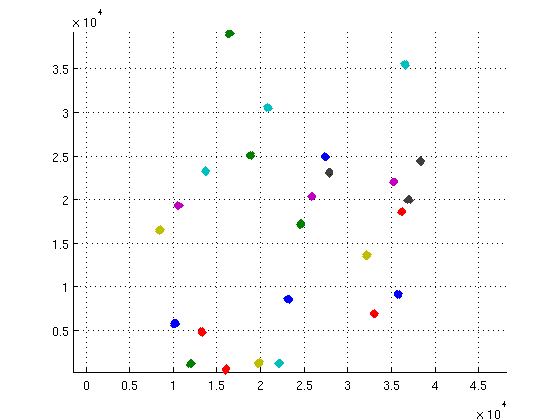
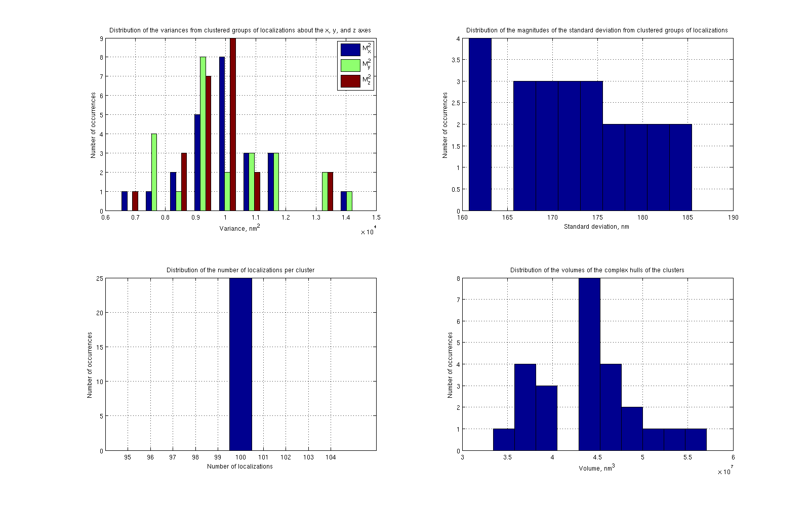
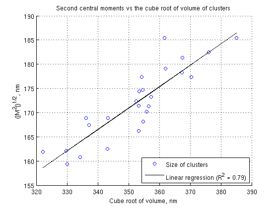

Contents
- Read localization data into memory.
- Filter out unnecessary columns and condition data for input to DBSCAN.
- Cluster localizations using DBSCAN.
- Separate clusters.
- Filter the clusters by number of localizations.
- Plot filtered clusters in 3D.
- Plot 3D scatter plot of cluster points and noise points.
- Find moments of the distribution of localizations within the clusters.
- Count the number of localizations within each cluster and noise points.
- Determine the volume of the complex hull defined by the clusters.
- Plot the histogram of second central moments.
- Output statistics from the scatter plots.
- Make a scatter plot of the magnitude of M2 vs. the cube root of volume.
% Script for testing analysis code designed for the telomere data. % % The test data contains 25 clusters of 100 points each normally % distributed around 25 uniformly and randomly selected centers. The % standard deviation of the point distributions is 100 nm in each of the x, % y, and z-directions. The three columns in the dataset correspond to x, y, % and z-coordinates whereas each row corresponds to a single point. % % $AUTHOR: Kyle M. Douglass $ $DATE: 2014/08/05 $ $REVISION: 0.1 $ %
Read localization data into memory.
workDir = '/mnt/LEBZ/Users/Kyle-Michael-Douglass/Projects/Telomeres/'; fName = 'test_data.txt'; data = tdfread([workDir fName]);
Filter out unnecessary columns and condition data for input to DBSCAN.
dataF = [data.x data.y data.z];
Cluster localizations using DBSCAN.
k - number of objects in a neighborhood of an object (minimal number of objects considered as a cluster) Eps - neighborhood radius, if not known avoid this parameter or put []
k = 5; Eps = 500; tic [class, type] = dbscan(dataF, k, Eps); toc
Elapsed time is 0.588451 seconds.
Separate clusters.
numClusters = max(class); clusters = cell(numClusters,1); for ctr = 1:numClusters clusters{ctr} = dataF(class == ctr, :); end % Save noise points in a separate array. noise = dataF(class == -1, :);
Filter the clusters by number of localizations.
Remove clusters with fewer than minLoc localizations
minLoc = 50; clustersF = clusters(cellfun(@length, clusters) > minLoc); numClustersF = length(clustersF) ;
Plot filtered clusters in 3D.
See, for example, http://stackoverflow.com/questions/5492806/plotting-a-surface-from-a-set-of-interior-3d-scatter-points-in-matlab
hold on for ctr = 1:numClustersF DT = DelaunayTri(clustersF{ctr}); hullFacets = convexHull(DT); trisurf(hullFacets,DT.X(:,1),DT.X(:,2),DT.X(:,3),'FaceColor',rand(1,3)) axis equal end hold off grid on
Plot 3D scatter plot of cluster points and noise points.
hold on for ctr = 1:numClustersF scatter3(clustersF{ctr}(:,1), clustersF{ctr}(:,2), clustersF{ctr}(:,3),'.') end scatter3(noise(:,1), noise(:,2), noise(:,3),'k+','SizeData',10) hold off axis equal grid on
Find moments of the distribution of localizations within the clusters.
Rows of M1 are the first moments of the distribution for each coordinate of the localizations within a single cluster.
M2 is the diagonal of the covariance matrix computed from the (Xc, Yc, Zc) positions of the points within a cluster. Each row is the covariance matrix diagonal of a different cluster.
M1 = cell2mat(cellfun(@mean, clustersF, 'UniformOutput', false)); M2 = cell2mat(cellfun(@second_central_moment, clustersF, 'UniformOutput', false)); % Magnitude of the second moment M2Mag = sqrt(sum(M2,2));
Count the number of localizations within each cluster and noise points.
numLoc = zeros(numClustersF + 1,1); for ctr = 1:numClustersF [numLoc(ctr), ~] = size(clustersF{ctr}); end % Noise points occupy the last element of the clusters cell array. [numLoc(end), ~] = size(clustersF{end});
Determine the volume of the complex hull defined by the clusters.
volume = zeros(numClustersF,1); for ctr = 1:numClustersF DT = DelaunayTri(clustersF{ctr}); t = DT.Triangulation; e1 = clustersF{ctr}(t(:,2),:) - clustersF{ctr}(t(:,1),:); e2 = clustersF{ctr}(t(:,3),:) - clustersF{ctr}(t(:,1),:); e3 = clustersF{ctr}(t(:,4),:) - clustersF{ctr}(t(:,1),:); V = abs(dot(cross(e1,e2,2),e3,2))/6; volume(ctr) = sum(V); end
Plot the histogram of second central moments.
Set the plot size to larger than default.
subplot(2,2,1) hFig = gcf(); set(hFig, 'Position', [100, 100, 1600, 1000]) hist(M2(1:end-1, :)) title('Distribution of the variances from clustered groups of localizations about the x, y, and z axes') xlabel('Variance, nm^2') ylabel('Number of occurrences') legend('M_x^2', 'M_y^2', 'M_z^2') grid on % Plot the histogram of magnitude of second moments. subplot(2,2,2) hist(M2Mag(1:end-1)) title('Distribution of the magnitudes of the standard deviation from clustered groups of localizations') xlabel('Standard deviation, nm') ylabel('Number of occurrences') grid on % Plot the histogram of the number of localizations. subplot(2,2,3) hist(numLoc(1:end-1)) title('Distribution of the number of localizations per cluster') xlabel('Number of localizations') ylabel('Number of occurrences') grid on % Plot the histogram of the volumes of the complex hulls. subplot(2,2,4) hist(volume) title('Distribution of the volumes of the complex hulls of the clusters') xlabel('Volume, nm^3') ylabel('Number of occurrences') grid on
Output statistics from the scatter plots.
disp(['Mean variance in x, y, and z (nm^2): ' num2str(mean(M2), '%.2f \t %.2f \t %.2f')]) disp(['Mean standard deviation in x, y, and z (nm): ' num2str(mean(M2).^(1/2), '%.2f \t %.2f \t %.2f')]) disp(['The expected standard deviations should be 100 nm in each direction.']) disp('-----') disp(['Mean magnitude of the variance (nm): ' num2str(mean(M2Mag), '%.2f')]) disp(['The expected standard deviations should be ' num2str(sqrt(3 * 100^2), '%.2f') '.']) disp('-----') disp(['Mean number of localizations per cluster: ' num2str(mean(numLoc), '%.2f')]) disp('There should be 100 localizations in each cluster.') disp('-----') disp(['Mean cluster volume (nm^3): ' num2str(mean(volume), '%.2f')])
Mean variance in x, y, and z (nm^2): 9900.85 10044.65 9699.71 Mean standard deviation in x, y, and z (nm): 99.50 100.22 98.49 The expected standard deviations should be 100 nm in each direction. ----- Mean magnitude of the variance (nm): 172.02 The expected standard deviations should be 173.21. ----- Mean number of localizations per cluster: 100.00 There should be 100 localizations in each cluster. ----- Mean cluster volume (nm^3): 44030870.39
Make a scatter plot of the magnitude of M2 vs. the cube root of volume.
close all x = volume.^(1/3); y = M2Mag; p = polyfit(x, y, 1); linearFit = polyval(p, x); resid = y - linearFit; SSresid = sum(resid.^2); SStotal = (length(y) -1) * var(y); Rsq = 1 - SSresid/SStotal; scatter(volume.^(1/3),M2Mag) hold on plot(volume.^(1/3), linearFit, 'k') hold off title('Second central moments vs the cube root of volume of clusters') xlabel('Cube root of volume, nm') ylabel('(|M^2|)^{1/2}, nm') legend('Size of clusters', ['Linear regression (R^2 = ' num2str(Rsq, '%.2f') ')'], 'Location', 'SouthEast') grid on